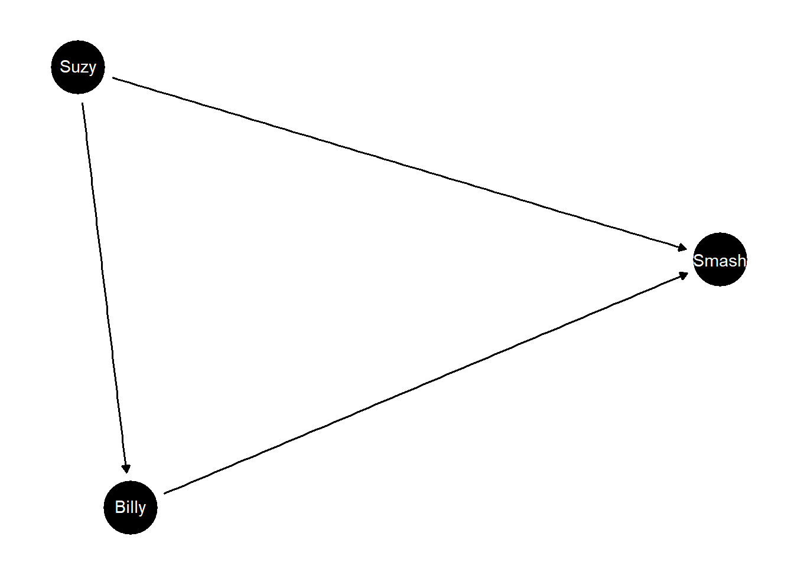

Chapter 7 Explanation
7.1 Tightening bounds on causes of effects using an unobserved covariate
“Explanation” can sometimes be thought of assessing whether an outcome was due to a cause: “\(Y\) because \(X\).” We saw examples showing the difficulty of identifying the “probability of causation” (whether \(X\) caused \(Y\) in a case) above (See for example Figure 6.1).
Knowledge of moderators and mediators can help however. In a particularly striking result, Dawid (2011) shows that knowledge derived from moderators can help even when the moderator is not observed for the case in question.
We illustrate with a simple example in which data is drawn from a process in which \(X\) has a positive effect on \(Y\) when \(C=1\) and a negative effect otherwise. We will assume \(X\) is as-if randomized, though \(C\) is not:
model <- make_model("X -> Y <- C; Y <-> C")
data <-
model %>%
set_restrictions("(Y[X=1, C=1] > Y[X=0, C=1]) &
(Y[X=1, C=0] < Y[X=0, C=0])", keep = TRUE) %>%
make_data(n= 200)These restrictions, coupled with flat priors, produce the following priors (i) on the effect of \(X\) on \(Y\) and (ii) that \(X\) caused \(Y\) in a case with \(X=Y=1\):
| Query | Given | Using | mean | sd |
|---|---|---|---|---|
| ATE | All | priors | 0.001 | 0.141 |
| PC | X==1 & Y==1 | priors | 0.499 | 0.136 |
We now compare inferences on the PC (for a case where we have no data on \(C\)) using one model that has been updated using data on \(C\) and one that has not:
update_model(model, select(data, X, Y)) %>%
query_model(query = "Y[X=1]>Y[X=0]", given = "X==1 & Y==1",
using = "posteriors")
update_model(model, data) %>%
query_model(query = "Y[X=1]>Y[X=0]", given = "X==1 & Y==1",
using = "posteriors") | Query | Given | Using | mean | sd |
|---|---|---|---|---|
| X caused Y | X==1 & Y==1 | posteriors | 0.502 | 0.103 |
| Query | Given | Using | mean | sd |
|---|---|---|---|---|
| X caused Y | X==1 & Y==1 | posteriors | 0.868 | 0.042 |
We see tight gains even though \(C\) is not observed. The remarkable result arises because although \(C\) is not observed in the case at hand, the model that has been updated with knowledge of \(C\) lets us figure out that the average effect of 0 is due to strong heterogeneity of effects. Indeed \(X=Y=1\) only arises when \(C=1\), in which case \(X\) causes \(Y\). Thus observing \(X=Y=1\) lets us infer that \(C=1\) and so in this case \(X\) causes \(Y\).
7.2 Actual Causation: Billy and Suzy’s moderator and mediation model
A classic problem in the philosophy of causation examines a story in which Billy and Suzy throw stones at a bottle (Hall 2004). Both are deadly shots but Suzy’s stone hits the bottle first. Had it not, Billy’s surely would have. Can we say that Suzy’s throw caused the bottle to break if it would have broken even if she hadn’t thrown?
We model a simple version of the Billy and Suzy stone throwing game as a causal model with moderation and mediation in three nodes.
model <- make_model("Suzy -> Billy -> Smash <- Suzy") %>%
set_restrictions(c(
# If Suzy throws the bottle breaks
"(Smash[Suzy=1]==0)",
# The bottle won't break by itself
"(Smash[Billy=0, Suzy = 0]==1)",
# Suzy's throw doesn't *encourage* Billy to throw
"Billy[Suzy=1]>Billy[Suzy=0]"))
plot(model)
Here “Suzy” means Suzy throws, “Billy”: means Billy throws—which he might not do if Suzy throws—and “Smash” means the bottle gets smashed.
The version here is a somewhat less deterministic version of the classic account. Suzy is still an ace shot but now she may or may not throw and Billy may or may not respond positively to Suzy and if he does respond he may or may not be successful. With all these possibilities we have twelve unit causal types instead of 1.
We have two estimands of interest: counterfactual causation and actual causation. Conditional on Suzy throwing and the bottle breaking, would the bottle not have broken had Suzy not thrown her stone? That’s counterfactual causation. The actual causation asks the same question but conditioning on the fact that Billy did or did not throw his stone—which we know could itself be due to Suzy throwing her stone. If so then we might think of an “active path” from Suzy’s throw to the smashing, even though had she not thrown the bottle might have smashed anyhow.
Our results:
actual_cause <- query_model(model, using = "priors",
queries = c(
Counterfactual = "Smash[Suzy = 1] > Smash[Suzy = 0]",
Actual = "Smash[Suzy = 1, Billy = Billy[Suzy = 1] ] >
Smash[Suzy = 0, Billy = Billy[Suzy = 1]]"),
given = c("Suzy==1 & Smash==1", "Suzy==1 & Smash==1 & Billy==0", "Suzy==1 & Smash==1 & Billy==1"),
expand_grid = TRUE
)| Query | Given | Using | mean | sd |
|---|---|---|---|---|
| Counterfactual | Suzy==1 & Smash==1 | priors | 0.663 | 0.237 |
| Counterfactual | Suzy==1 & Smash==1 & Billy==0 | priors | 0.748 | 0.223 |
| Counterfactual | Suzy==1 & Smash==1 & Billy==1 | priors | 0.497 | 0.287 |
| Actual | Suzy==1 & Smash==1 | priors | 0.831 | 0.168 |
| Actual | Suzy==1 & Smash==1 & Billy==0 | priors | 1.000 | 0.000 |
| Actual | Suzy==1 & Smash==1 & Billy==1 | priors | 0.497 | 0.287 |
Our inferences, without even observing Billy’s throw distinguish between Suzy being a counterfactual cause and an actual cause. We think it likely that Suzy’s throw was an actual cause of the outcome though we are less sure that it was a counterfactual causes. Observing Billy’s throw strengthens our inferences. If Billy didn’t throw then we are sure Suzy’s throw was the actual cause, though we are still in doubt about whether her throw was a counterfactual cause (since Billy might have thrown if she hadn’t).
Note that if we observed Suzy not throwing then we would learn more about whether she would be a counterfactual cause since we would have learned more about whether Billy reacts to her and also about whether Billy is a good shot.
| Query | Given | Using | mean | sd |
|---|---|---|---|---|
| Counterfactual | Suzy==0 & Billy==0 | priors | 1.000 | 0.000 |
| Counterfactual | Suzy==0 & Billy==1 | priors | 0.495 | 0.287 |
| Counterfactual | Suzy==0 & Billy==1 & Smash==1 | priors | 0.000 | 0.000 |
| Actual | Suzy==0 & Billy==0 | priors | 1.000 | 0.000 |
| Actual | Suzy==0 & Billy==1 | priors | 0.743 | 0.222 |
| Actual | Suzy==0 & Billy==1 & Smash==1 | priors | 0.491 | 0.290 |
7.3 Diagnosis: Inferring a cause from symptoms
Sometimes we want to know whether a particular condition was present that could have caused an observed outcome. This is the stuff of medical diagnosis: on observing symptoms, is the sickness due to \(A\) or to \(B\)?
We imagine cases in which we do not get to observe the putative cause directly and we want to infer both whether the putative cause was present and whether it caused the outcome. This requires stating a query on both an effect and the level of an unobserved node.
An illustration:
model <- make_model("A -> S -> Y <- B") %>%
set_restrictions(c("(S[A=1]< S[A=0])",
"(Y[S=1]<Y[S=0])",
"(Y[S = 0, B = 0]== 1)"))
plot(model)query_model(model,
queries = list(A="(Y[A=1] > Y[A =0]) & A==1", B="(Y[B=1] > Y[B =0]) & B==1"),
given = list("Y==1", "Y==1 & S==1"), using = "priors",
expand_grid = TRUE) %>% kable| Query | Given | Using | mean | sd |
|---|---|---|---|---|
| A | Y==1 | priors | 0.200 | 0.205 |
| A | Y==1 & S==1 | priors | 0.257 | 0.233 |
| B | Y==1 | priors | 0.443 | 0.256 |
| B | Y==1 & S==1 | priors | 0.293 | 0.219 |
In this example there are two possible causes of interest, \(A\) and \(B\). With flat priors the \(B\) path starts as clearly more probable. Observation of symptom \(S\), which is a consequence of \(A\), however raises the chances that the outcome is due to \(A\) and lowers the chances that it is due to \(B\).
References
Dawid, A Philip. 2011. “The Role of Scientific and Statistical Evidence in Assessing Causality.” Perspectives on Causation, 133–47.
Hall, Ned. 2004. “Two Concepts of Causation.” Causation and Counterfactuals, 225–76.